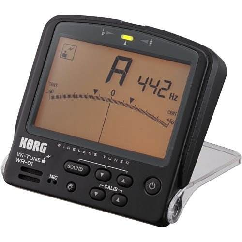
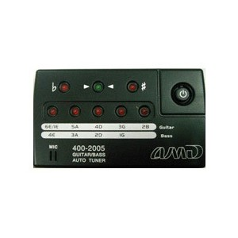

La afinación
Este es uno de los aspectos más difíciles e importantes para el que comienza a estudiar la guitarra, la afinación. Es importante que tu guitarra este afinada, por el simple hecho de que te será imposible aprender a tocarla sino lo esta.
Nota de cada cuerda
Antes de empezar a aprender los diferentes métodos de afinar la guitarra, tenemos que conocer que nota debe dar cada cuerda: La cuerda superior (la más gruesa de todas, también llamada 6ta. cuerda) debe dar la nota Mi, las notas de las cuerdas siguientes son La, Re, Sol, Si y la cuerda inferior (la más delgada de todas, también llamada 1ra. cuerda) también al igual que la sexta cuerda debe dar la nota de Mi, pero más aguda claro está.
En este modulo explicaremos tres métodos: el método básico de afinación, afinación sobre una nota como referencia y el afinador eléctrico.
Método básico de afinación
Aflojas la sexta cuerda hasta que no dé ningún sonido, y luego la irás subiendo (apretando) muy despacio hasta que dé un sonido claro sin subirla mucho; en ésta disposición se considerará ya afinada la sexta, pasamos entonces a afinar la 5ta. cuerda que después de aflojarla como se hizo con la anterior la irás subiendo muy poco a poco hasta que ésta cuerda tocada al aire (es decir, sin que la pise la mano izquierda) produzca el mismo sonido que el de la sexta cuerda pisada en el 5to. traste. Ya afinada la quinta se procederá sucesivamente a la afinación de las demás cuerdas de acuerdo a la tabla siguiente:
- La cuerda 6ta. pisada en 5to. traste da el sonido que corresponde a la 5ta. al aire.
- La cuerda 5ta. pisada en 5to. traste da el sonido que corresponde a la 4ta. al aire.
- La cuerda 4ta. pisada en 5to. traste da el sonido que corresponde a la 3ra. al aire.
- La cuerda 3ra. pisada en 4to. traste da el sonido que corresponde a la 2da. al aire.
- La cuerda 2da. pisada en 5to. traste da el sonido que corresponde a la 1ra. al aire.
Este método puede ser utilizado en cuanto se tenga un oído musical o un oído entrenado, ya que no teniéndolo puede resultar tardado o incluso molesto, o en todo caso en cuando lo hagamos por entrenamiento de nuestro oído.
Afinación sobre una nota como referencia
Una de las formas comunes de afinar la guitarra es tratando de igualar las notas equivalentes que debe producir cada cuerda de tu guitarra con otro instrumento afinado, ya sea un piano u otra guitarra. Antes de empezar a afinar una cuerda aflójala y luego la vas apretando hasta que el sonido sea el mismo al del instrumento que estamos usando como referencia.
A continuación, puedes escuchar el sonido correcto de cada cuerda para que uses como referencia para afinar tu guitarra:
- 6ta cuerda:
- 5ta cuerda:
- 4ta cuerda:
- 3ra cuerda:
- 2da cuerda:
- 1era cuerda:
Afinador eléctrico
Yo recomiendo este método para una persona que esta dando sus primeros pasos, es afinando con un afinador eléctrico. Este cuesta entre 10 y 20 dólares US. Afinando con él podrás tener más adelante un afinado absoluto (o exacto) sin tener que usarlo cada vez que tu guitarra se desafine.
Ejemplos de afinadores 
Para utilizar estos, lo único que hay que haces es ponerlo cerca de las cuerdas y tocar la cuerda al aire, el nos mostrará si está muy arriba (se ha socado demasiado) o está más bajo (hay socar más la cuerda).